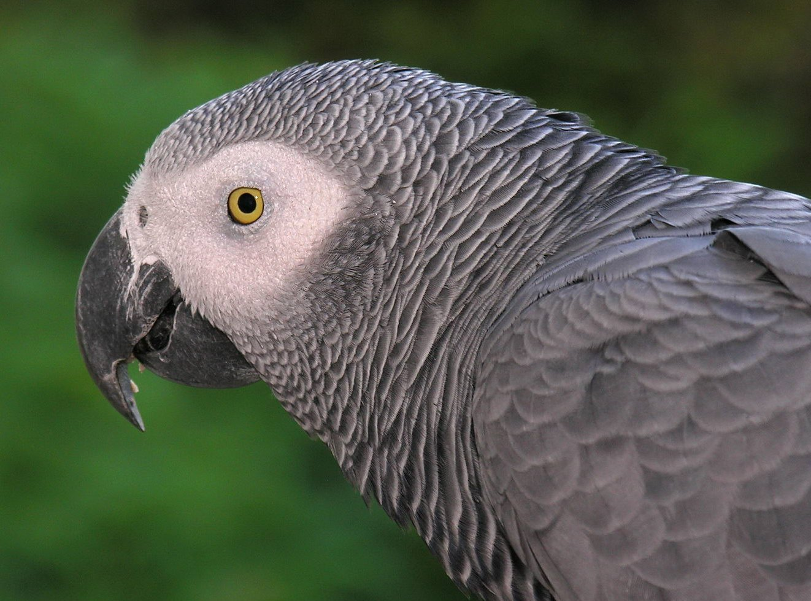

The grey parrot is a medium-sized, predominantly grey, black-billed parrot. Its typical weight is 400 g (0.88 lb), with an approximate length of 33 cm (13 in),[2] and a wingspan of 46–52 cm (18–20 in).[3] It has darker grey than its body over the head and both wings. The head and body feathers have slight white edges. The tail feathers are red. Due to selection by parrot breeders, some grey parrots are partly or completely red.[4] Both sexes appear similar.[2] The colouration of juveniles is similar to that of adults, but typically, their eyes are dark grey to black, in comparison to the yellow irises around dark eyes of the adult birds,[5] and their undertail coverts are tinged with grey.[2] Adults weigh 418–526 g (0.922–1.160 lb).[6] Grey parrots may live for 40–60 years in captivity, although their mean lifespan in the wild appears to be shorter — approximately 23 years.[3] 
The African grey parrot’s ability to talk and mimic sounds makes this medium-sized parrot a captivating companion. African grey owners often report that their greys oftentimes talk in context and seem very attuned to their people’s emotions. The African grey parrot is not just a top talker — this bird is also known for its extreme intelligence, which gives them the moniker “The Einsteins of the Bird World.”